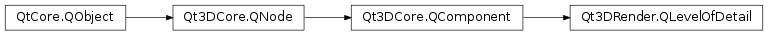

Qt3DRender.QLevelOfDetail¶
Inherited by: Qt3DRender.QLevelOfDetailSwitch
Synopsis¶
Functions¶
- def
camera() - def
createBoundingSphere(center, radius) - def
currentIndex() - def
thresholdType() - def
thresholds() - def
volumeOverride()
Slots¶
- def
setCamera(camera) - def
setCurrentIndex(currentIndex) - def
setThresholdType(thresholdType) - def
setThresholds(thresholds) - def
setVolumeOverride(volumeOverride)
Signals¶
- def
cameraChanged(camera) - def
currentIndexChanged(currentIndex) - def
thresholdTypeChanged(thresholdType) - def
thresholdsChanged(thresholds) - def
volumeOverrideChanged(volumeOverride)
Detailed Description¶
The
QLevelOfDetailclass provides a way of controlling the complexity of rendered entities based on their size on the screen.
QLevelOfDetailcan be used to control the representation of an entity based on distance from the observer or size on the screen.In order to improve rendering performance, objects that are very small can be rendered using far fewer details, in geometry or texture.
The component is controlled by specifying thresholds of values which are interpreted as either distances from the camera or screen size.
As the point of view changes, the
PySide2.Qt3DRender.Qt3DRender::QLevelOfDetail.currentIndex()property will change to reflect matching value in the range array.The
PySide2.Qt3DRender.Qt3DRender::QLevelOfDetail.currentIndex()property can then be used, for example, to enable or disable entities, change material, etc.The LevelOfDetail component is not shareable between multiple entities .
#include <Qt3DCore/QEntity> #include <Qt3DRender/QGeometryRenderer> #include <Qt3DRender/QLevelOfDetail> // Scene Qt3DCore::QEntity *rootEntity = new Qt3DCore::Qt3DCore::QEntity; Qt3DCore::QEntity *renderableEntity = new Qt3DCore::QEntity(rootEntity); Qt3DRender::QGeometryRenderer *geometryRenderer = new Qt3DCore::QGeometryRenderer(renderableEntity); renderableEntity->addComponent(geometryRenderer); Qt3DRender::QLevelOfDetail* lod = new Qt3Render::QLevelOfDetail(renderableEntity); QVector<qreal> thresholds = {20, 35, 50, 65}; lod->setThresholds(thresholds); lod->setCamera(mainCamera); renderableEntity->addComponent(lod); // connect to QLevelOfDetail::currentIndexChanged to toggle rendering ...
-
class
PySide2.Qt3DRender.Qt3DRender.QLevelOfDetail([parent=nullptr])¶ Parameters: parent – PySide2.Qt3DCore.Qt3DCore::QNodeConstructs a new
QLevelOfDetailwith the specifiedparent.
-
PySide2.Qt3DRender.Qt3DRender.QLevelOfDetail.ThresholdType¶ Specifies how the values in the thresholds are interpreted
Constant Description Qt3DRender.QLevelOfDetail.DistanceToCameraThreshold Distance from the entity to the selected camera Qt3DRender.QLevelOfDetail.ProjectedScreenPixelSizeThreshold Size of the entity when projected on the screen as seen from the selected camera, expressed in number of pixels on the side of the bounding square in screen space.
-
PySide2.Qt3DRender.Qt3DRender.QLevelOfDetail.camera()¶ Return type: PySide2.Qt3DRender.Qt3DRender::QCameraSee also
PySide2.Qt3DRender.Qt3DRender::QLevelOfDetail.setCamera()
-
PySide2.Qt3DRender.Qt3DRender.QLevelOfDetail.cameraChanged(camera)¶ Parameters: camera – PySide2.Qt3DRender.Qt3DRender::QCamera
-
PySide2.Qt3DRender.Qt3DRender.QLevelOfDetail.createBoundingSphere(center, radius)¶ Parameters: - center –
PySide2.QtGui.QVector3D - radius –
PySide2.QtCore.float
Return type: PySide2.Qt3DRender.Qt3DRender::QLevelOfDetailBoundingSphere- center –
-
PySide2.Qt3DRender.Qt3DRender.QLevelOfDetail.currentIndex()¶ Return type: PySide2.QtCore.intSee also
PySide2.Qt3DRender.Qt3DRender::QLevelOfDetail.setCurrentIndex()
-
PySide2.Qt3DRender.Qt3DRender.QLevelOfDetail.currentIndexChanged(currentIndex)¶ Parameters: currentIndex – PySide2.QtCore.int
-
PySide2.Qt3DRender.Qt3DRender.QLevelOfDetail.setCamera(camera)¶ Parameters: camera – PySide2.Qt3DRender.Qt3DRender::QCameraSets the
camerarelative to which distance and size are computed.See also
PySide2.Qt3DRender.Qt3DRender::QLevelOfDetail.camera()
-
PySide2.Qt3DRender.Qt3DRender.QLevelOfDetail.setCurrentIndex(currentIndex)¶ Parameters: currentIndex – PySide2.QtCore.intSets the
currentIndex.Note
This should not normally be set by the user.
However, if the component is disabled, then changing the current index is a simple way of switching between multiple representations.
See also
PySide2.Qt3DRender.Qt3DRender::QLevelOfDetail.currentIndex()
-
PySide2.Qt3DRender.Qt3DRender.QLevelOfDetail.setThresholdType(thresholdType)¶ Parameters: thresholdType – PySide2.Qt3DRender.Qt3DRender::QLevelOfDetail.ThresholdTypeSets the way thresholds values are interpreted with parameter
thresholdTypeSee also
PySide2.Qt3DRender.Qt3DRender::QLevelOfDetail.thresholdType()Qt3DRender.QLevelOfDetail.ThresholdType
-
PySide2.Qt3DRender.Qt3DRender.QLevelOfDetail.setThresholds(thresholds)¶ Parameters: thresholds – Sets the range values in
thresholds.See also
PySide2.Qt3DRender.Qt3DRender::QLevelOfDetail.thresholds()Qt3DRender.QLevelOfDetail.thresholdType
-
PySide2.Qt3DRender.Qt3DRender.QLevelOfDetail.setVolumeOverride(volumeOverride)¶ Parameters: volumeOverride – PySide2.Qt3DRender.Qt3DRender::QLevelOfDetailBoundingSphereSee also
PySide2.Qt3DRender.Qt3DRender::QLevelOfDetail.volumeOverride()
-
PySide2.Qt3DRender.Qt3DRender.QLevelOfDetail.thresholdType()¶ Return type: PySide2.Qt3DRender.Qt3DRender::QLevelOfDetail.ThresholdTypeSee also
PySide2.Qt3DRender.Qt3DRender::QLevelOfDetail.setThresholdType()
-
PySide2.Qt3DRender.Qt3DRender.QLevelOfDetail.thresholdTypeChanged(thresholdType)¶ Parameters: thresholdType – PySide2.Qt3DRender.Qt3DRender::QLevelOfDetail.ThresholdType
-
PySide2.Qt3DRender.Qt3DRender.QLevelOfDetail.thresholds()¶ Return type: See also
PySide2.Qt3DRender.Qt3DRender::QLevelOfDetail.setThresholds()
-
PySide2.Qt3DRender.Qt3DRender.QLevelOfDetail.thresholdsChanged(thresholds)¶ Parameters: thresholds –
-
PySide2.Qt3DRender.Qt3DRender.QLevelOfDetail.volumeOverride()¶ Return type: PySide2.Qt3DRender.Qt3DRender::QLevelOfDetailBoundingSphereSee also
PySide2.Qt3DRender.Qt3DRender::QLevelOfDetail.setVolumeOverride()
-
PySide2.Qt3DRender.Qt3DRender.QLevelOfDetail.volumeOverrideChanged(volumeOverride)¶ Parameters: volumeOverride – PySide2.Qt3DRender.Qt3DRender::QLevelOfDetailBoundingSphere
© 2018 The Qt Company Ltd. Documentation contributions included herein are the copyrights of their respective owners. The documentation provided herein is licensed under the terms of the GNU Free Documentation License version 1.3 as published by the Free Software Foundation. Qt and respective logos are trademarks of The Qt Company Ltd. in Finland and/or other countries worldwide. All other trademarks are property of their respective owners.